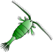
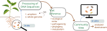

Work
As a bioinformatician and computational ecologist I build the pipelines that turn raw sequencing data into a structured view of a biological community, and the models that run on that view. The questions at the other end are ecological and mostly applied: how a community is assembled, how it responds to stress, and how far ahead its behaviour can be predicted.
Ecological forecasting
Ecology is often treated as a field that cannot be forecasted, and the complexity of natural systems is the usual reason given. Across four chapters I tested which properties of a community and its environment actually set the ceiling on forecast skill: the number and strength of species interactions, growth rates and body sizes, diversity, sampling design, and environmental stress. Most of them mattered, and complexity did not always hurt.

Experiments
Microbial communities under manipulated environmental conditions (temperature, light, etc.) and species richness. Run for hundreds of microbial generations (up to nine months) and sampled at high frequency. Additionally, a high-frequency lake plankton record.
Forecasting
Empirical dynamic modelling as the main approach, with ARIMA, random forests and recurrent networks as comparators, so a result about forecast skill was never a result about one method. At 7.4 million models fitted in a single parameter sweep, run tracking became part of the method.
Interactions
Convergent cross mapping and multivariate autoregressive state-space models to estimate which species affect which, and how strongly. Those counts and strengths then became predictors of forecast skill in their own right.
Microbiome platform
Two production pipelines and the models that run on their output, built as sole developer: one for amplicon sequencing, one for whole-genome bacterial sequencing. They produce structurally different data: broad and shallow on one side, deep and per-strain on the other. They are linked, so that an amplicon survey can pull down the genome-derived traits of the organisms it identifies. The questions downstream are applied ones: disease pressure on a crop, soil health under different management, how a community assembles over time.

Amplicon pipeline
Marker-gene reads from soil, root, gut and water. 16S and ITS, with hash-based ASV identifiers so the same microbe carries the same ID across projects.
- QualityDADA2 with automated denoising parameter selection
- Taxonomycommunity structure, abundance, predicted function
- PathogenicityMBPD reference flags for 16S
- FungiFungalTraits and FUNGuild trait + guild assignment
- InteropBIOM exchange with QIIME2 and mothur
Whole genome pipeline
From raw reads, contigs or annotated genomes. Returns a trait profile per strain plus a standalone HTML report with a circular genome map. 16S feeds back to the amplicon pipeline.
- PhylogenyBLAST against curated 16S references
- NicheGenomeSPOT physiology, gRodon2 growth rate
- Metabolismgenome-scale metabolic models, MEMOTE checked
- MetabolitesantiSMASH biosynthetic gene clusters
- BiosafetyStarAMR, VFDB, MBPD, k-mer ML
stack
- Languages. Python and R, packaged per module.
- Data. one hierarchical HDF5 store, and a curated reference collection of 20,000 complete NCBI RefSeq genomes carried through the pipeline.
- Build. Docker, Git, Quarto.
- Principles. containerised modules with resolved dependencies, versioning and provenance on every result, an evolving schema, reproducible reruns.
Modelling and inference
The systems change, but the questions repeat: how to design a study so the effect is estimable, and how much of what a model explains survives out of sample.
Design and inference
Factorial designs and power analyses, then linear, generalised linear and mixed models, with validation and uncertainty part of the answer. Applied, it becomes monitoring design: how much sampling a programme needs.
Bayesian
Bayesian inference for the cases where a point estimate is not the answer: hierarchical models over grouped and repeated measures, priors that carry what is already known, and posterior predictive checks to find where a model fails.
Predictive
Feature engineering, gradient boosting, stacked ensembles and neural networks, tuned and validated out of sample, interpreted with SHAP.
Metabolic models
Genome-scale reconstructions per strain, quality checked, then community flux balance analysis for what strains exchange. Open-source solvers when needed.
how the work is built
- Reproducible by default. version control in, Quarto out, end to end.
- Data and code published. archived alongside the first-author papers.
- Built to be handed over. containers, pinned versions, written protocols.